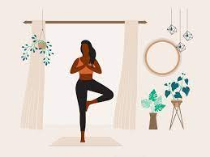
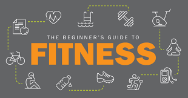

Fitness for Wellbeing
Stay active and improve your mental health with our fitness resources.
-
Yoga:For beginners
Why should we learn yoga?
click here to know!Yoga improves strength, balance and flexibility. Slow movements and deep breathing increase blood flow and warm up muscles, while holding a pose can build strength.
How to Start Exercising: A Beginner’s Guide to Working Out:
If you exercise regularly, you’ll begin to see and feel the benefits it can have on your body and well-being quickly. If you’re considering starting to exercise but don’t know where to begin, this article is for you. Here’s all you need to know about starting a routine and sticking to it.
click here to start kick start your journey! 🏋
Pilates exercises:
What is Pilates?

Created by Joseph Pilates in the early 20th century and originally called “Contrology,” Pilates is a system of exercises designed to enhance the body’s potential by correcting muscular imbalances, finding optimal alignment, and creating efficient movement patterns.
Pilates exercises, in conjunction with your breath, employ all of your body’s muscles. It’s known for targeting smaller and deeper stabilization muscles and often explained as working from the inside out.
Pilates supports your body’s structure through a balance of strength, mobility, and flexibility, with every exercise engaging your core. It can involve matwork or low impact bodyweight exercises, or it can be done on specialized equipment.
Click here to know more!